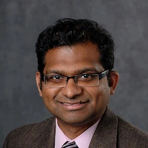

SaTC: CORE: Small: Robust Speaker and Speech Recognition Under AI-Driven Physical and Digital Attacks
Duration: 10/1/2023-9/30/2026
Welcome to the web page of our research project: "SaTC: CORE: Small: Robust Speaker and Speech Recognition Under AI-Driven Physical and Digital Attacks". This website is created and maintained to disseminate and share research results and other information related to the project.
Project Description
Recent advances in artificial intelligence (AI) technologies have driven the widespread popularity and acceptance of commercial voice assistants, transforming the way in which we interact with the digital ecosystem and physical devices. These voice assistants have diverse applications across many critical sectors, ranging from smart homes and healthcare to e-commerce and self-driving vehicles. However, this rapidly evolving technology has introduced new cybersecurity threats that could significantly undermine voice system security. For example, the criminal exploitation of AI technologies has led to the advent of audio deepfakes that can be used to circumvent speaker verification protocols in banking systems. This project will address AI-driven attacks through a comprehensive exploration of audio attack strategies and the development of a defensive framework to strengthen recognition performance and counteract these attacks. The project's broader significance and importance are underpinned by its deep understanding of AI-driven voice attacks and the methodologies to deploy defenses against them, thereby enhancing the safety of voice-controlled systems across various sectors. The project will also provide research training opportunities for underrepresented students, both undergraduate and graduate, as well as K-12 students through well-crafted curriculum design and engaging outreach activities.
The goal of this project is to scrutinize the robustness of automatic speaker and speech recognition (ASSR) against AI-driven digital and physical voice attacks, and further develop a defensive framework for enhancing the resilience of voice signals and voice models. The research activities include: (i) characterizing physically-realizable attacks targeting speaker recognition and measuring the impact of stealthy attacks on speech recognition; (ii) designing robust learning-based defenses by shielding the voice signals from threats posed by voice synthesis techniques, and analyzing high-frequency voice components to reveal attack signals; and (iii) developing a robustness enhancement framework that incorporates vocal styles and facial expression features in a multi-modality speaker and speech representation scheme. The insights and technologies generated through this project will significantly advance our understanding of voice assistant security, foster secure next-generation voice applications, and enable voice systems to fully leverage emerging sensing and learning technologies.
Personnel
Principal Investigators

|
Dr. Qiben Yan (PI) Assitant Professor Department of Computer Science and Engineering Michigan State University Homepage: https://cse.msu.edu/~qyan/ 
|
|
Dr. Li Xiao (Co-PI) Professor Department of Computer Science and Engineering Michigan State University Homepage: https://www.cse.msu.edu/~lxiao/ |
|
|  |
Dr. Arun Ross (Co-PI) Martin J. Vanderploeg Endowed Professor Department of Computer Science and Engineering Michigan State University Homepage: https://rossarun.wixsite.com/arun-ross |
Note: Any opinions, findings and conclusions or recommendations expressed on this web page are those of the author(s) and do not necessarily reflect the views of the National Science Foundation (NSF).